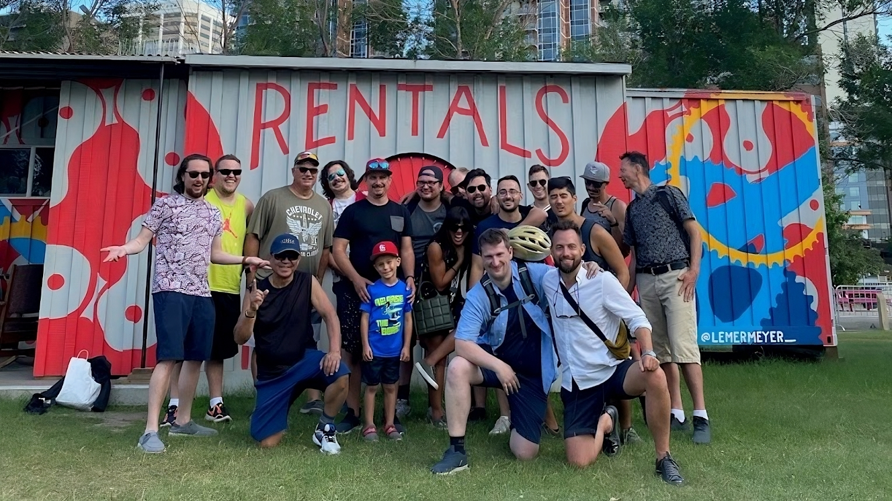

Prices
Home | About | Rentals | Prices | Photos | Reviews
| 
We offer a variety of bikes for different ages and needs. Whether you want to explore the city for a few hours or enjoy a full day of cycling, we have the right bike for you. Our prices are as follows: Adult Bikes:
Youth bikes and trailers (for children up to 12 years old, must be rented with an adult bike):
Tandem bikes (for two riders):
* A full day rental is from 9:30am to 6pm. You can pick up and drop off your bike anytime within this period. We allow a grace period of 10 minutes for 2 and 4 hour rentals. Maintenance and RepairsTo book an appointment, please call or text 403-874-5637. We offer competitive rates for a variety of services. Contact us for a quote on any specific request. Joe's Garage also provides on-site support for businesses. Learn more about our "corporate house calls" program. Tune-up Package PricesWe offer three levels of tune-up services for your bike, depending on your needs and budget. All prices are subject to change based on the parts and labour required. Joe will provide you with a quote and get your approval before proceeding with any extra work. Level 1 - "Make It Safe" - $90 This service includes the basic adjustments and checks to ensure your bike is safe and functional. We will:
Level 2 - "Make It Work" - $150 This service includes everything in Level 1, plus more detailed and precise tuning of your bike's components. We will:
Level 3 - "Make It Nice" - $225 This service includes everything in Level 1 and 2, plus a thorough cleaning and greasing of your bike's parts. We will:
|

Joe@joesgarage.mobi
© Copyright 2023 Joe's Garage, Calgary, Alberta, Canada!